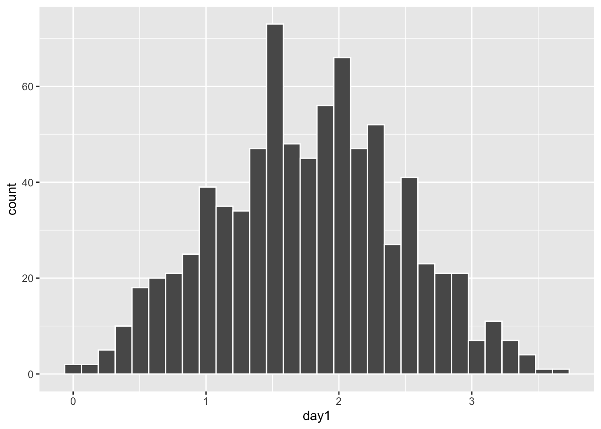

Chapter 19 El impacto de valores atípico
En cierta ocasiones valores fuera de lo normal pueden hacer grandes cambios en el resultado, en este caso la regresión. ¿Cual es el efecto del valor grande? Removemos ese valor del archivo de datos y revaluamos el modelo (la regresión lineal). Nota que ahora el modelo es sumamente diferente \(y=-163.7+103.2*x\). ¿Ahora se rechaza las dos hipótesis?
pubsnew <- pubs[ which(pubs$barres<80), ] # remover el valor grande
pubsnew=pubsnew %>%
add_row(barres = 4, mortalidad = 0) # Añadiendo un par de valores
pubRegNew <- lm(mortalidad~barres, data = pubsnew)
#summary(pubRegNew)
tab_model(
pubRegNew,show.df = TRUE,
CSS = list(
css.depvarhead = 'color: red;',
css.centeralign = 'text-align: left;',
css.firsttablecol = 'font-weight: bold;',
css.summary = 'color: blue;'
)
)| mortalidad | ||||
|---|---|---|---|---|
| Predictors | Estimates | CI | p | df |
| (Intercept) | -163.70 | -374.14 – 46.73 | 0.106 | 6.00 |
| barres | 103.20 | 98.18 – 108.23 | <0.001 | 6.00 |
| Observations | 8 | |||
| R2 / R2 adjusted | 0.998 / 0.997 | |||
## `geom_smooth()` using formula = 'y ~ x'
19.1 La venta de discos de música
Ahora un set de datos más complejo y más realista a los que uno encontraría en un estudio de en medicina, sociología o ecológica.
Los datos representa la cantidad de dinero dedicado a la promoción de diferentes CD’s de una compañia de música y la cantidad de CD (CD/downloads) vendido. El la primera linea se observa la cantidad de libras esterlina, £ (UK) dedicado a la promoción del album de música, en la primera linea vemos que se gasto £10,256, y después la cantidad de CD vendido fue 330.
## Rows: 200 Columns: 2
## ── Column specification ────────────────────────────────────────────────────────
## Delimiter: ","
## dbl (2): adverts, sales
##
## ℹ Use `spec()` to retrieve the full column specification for this data.
## ℹ Specify the column types or set `show_col_types = FALSE` to quiet this message.## # A tibble: 6 × 2
## adverts sales
## <dbl> <dbl>
## 1 10.3 330
## 2 986. 120
## 3 1446. 360
## 4 1188. 270
## 5 575. 220
## 6 569. 170## [1] 200Comenzamos con hacer un gráfico entre las dos variables. Nota que en la parte de geom_smooth(), tiene que incluir method=lm, esto significa que el método de construir la linea usara la regresión lineal. Se añade a la función lineal \(\epsilon\) que representa los errores de los valores al comparar con la linea que representa el mejor modelo.
\[Y_{ i }=\beta _{ 0 }+\beta _{ 1 }X_{ i }+\epsilon _{ i }\] Recuerda que \(\beta _{ 0 }\) es el intercepto y el \(\beta _{ 1 }X_{ i }\) es la pendiente. El área sombreada es el área de 95 de intervalo de confianza. Esto quiere decir que la mejor linea, intercepto y pendiente podría variar en este rango si repetimos el experimento. Nota aquí todas las alternativas, añadí los dos extremos, con una pendiente mayor (roja) y una menor (violeta). Cada punto representa la venta de CD con su correspondiente cantidad dedicada a la promoción. Los \(epsilon\) seria la diferencia entre la mejor linea y el valor original, esto se llama tambien los residuales.
library(ggplot2)
ggplot(Album_Sales_1_new,aes(x=adverts, y=sales))+
geom_smooth(method=lm, se = TRUE)+
geom_point()+
geom_segment(aes(x=0, y=120, xend=2250, yend=380), colour="red")+
geom_segment(aes(x=0, y=150, xend=2250, yend=320), colour="purple")## `geom_smooth()` using formula = 'y ~ x'
El modelo lineal con la función lm(). ¿Como interpretas los coeficientes y si estos son significativos, si se rechaza la hipótesis nula?
## # A tibble: 6 × 2
## adverts sales
## <dbl> <dbl>
## 1 10.3 330
## 2 986. 120
## 3 1446. 360
## 4 1188. 270
## 5 575. 220
## 6 569. 170model1=lm(sales~adverts, Album_Sales_1_new)
#summary(model1)
tab_model(
model1,show.df = TRUE,
CSS = list(
css.depvarhead = 'color: red;',
css.centeralign = 'text-align: left;',
css.firsttablecol = 'font-weight: bold;',
css.summary = 'color: blue;'
)
)| sales | ||||
|---|---|---|---|---|
| Predictors | Estimates | CI | p | df |
| (Intercept) | 134.14 | 119.28 – 149.00 | <0.001 | 198.00 |
| adverts | 0.10 | 0.08 – 0.12 | <0.001 | 198.00 |
| Observations | 200 | |||
| R2 / R2 adjusted | 0.335 / 0.331 | |||
19.1.1 Supuestos de la regresión lineal
Igualdad de varianza: En el primer gráfico evaluar si los datos están distribuido más o menos igual. y que no un más variación un un área del gráfico que otro.
Normalidad de los datos: En el segundo gráfico evaluar la figura de qqplot.
Evaluar si hay datos sesgados (atípicos) que influencia los resultados
En el cuarto gráfico evaluar si hay valores que tienen mucho peso si se incluyen o no en el análisis. Estos van a ser identificado
En el presente gráfico hay tres valores que hay que evaluar (1,42,169), estos valores se tiene que asegurar que son correctos. Siempre es bueno remover los valores sesgados y rehacer el análisis para observar cuan diferente son los resultas.
plot(model1) # Evaluar los supuestos, 1. Igualdad de varianza, 2. Normalidad, 4. Datos sesgados (Cook's Distance)
19.2 Cook’s Distance
Evaluar si hay unos valores que sesgan los resultados.
FROM WIKIPEDIA Definition. Data points with large residuals (outliers) and/or high leverage may distort the outcome and accuracy of a regression. Cook’s distance measures the effect of deleting a given observation. Points with a large Cook’s distance are considered to merit closer examination in the analysis.
Detecting highly influential observations There are different opinions regarding what cut-off values to use for spotting highly influential points. A simple operational guideline of D_i>1 has been suggested.
Others have indicated that D_i>4/n, where n is the number of observations, might be used.
Aqui enseño como añadir 1. los valores de “cook.distance” a su archivo 2. Añadir una columna de “secuencia” de los datos 3. Crear una gráfica de las distancia de Cook.
4. Which values have Di larger than 1, which values have Cook’s distances larger 4/n?
## [1] 0.02## # A tibble: 6 × 3
## adverts sales cooks.distance
## <dbl> <dbl> <dbl>
## 1 10.3 330 0.0572
## 2 986. 120 0.0110
## 3 1446. 360 0.0178
## 4 1188. 270 0.000662
## 5 575. 220 0.000548
## 6 569. 170 0.000207## # A tibble: 6 × 4
## adverts sales cooks.distance sequence
## <dbl> <dbl> <dbl> <int>
## 1 10.3 330 0.0572 1
## 2 986. 120 0.0110 2
## 3 1446. 360 0.0178 3
## 4 1188. 270 0.000662 4
## 5 575. 220 0.000548 5
## 6 569. 170 0.000207 6## # A tibble: 6 × 4
## adverts sales cooks.distance sequence
## <dbl> <dbl> <dbl> <int>
## 1 701. 250 0.00141 195
## 2 911. 190 0.000804 196
## 3 889. 240 0.000321 197
## 4 801. 250 0.00101 198
## 5 1500 230 0.00608 199
## 6 786. 110 0.00649 200ggplot(Album_Sales_1_new, aes(sequence, cooks.distance))+
geom_point()+
geom_hline(aes(yintercept=4/length(Album_Sales_1_new$adverts), colour="red"))
19.4 Paso 1
- Primer paso, mirar los coeficientes.
- El resultado: El coeficiente (intercepto) y la pendiente del model1
19.4.1 Paso 2
- Evaluar si los coeficientes son diferentes de cero.
La primera hipótesis, Determinar si el intercepto es igual a cero. Mira el valor de p, Pr(>|t|), determinar si el valor es menor de 0.05, si lo es se rechaza la Ho y por consecuencia tenemos confianza que el intercepto no incluye cero.
La segunda hipótesis nula Deteminar si la pendiente es igual a cero. Mira el valor de p, Pr(>|t|), como el valor es menor de p=0.05, se rechaza la Ho y por consecuencia tenemos confianza que la pendiente no incluye cero.
19.5 Paso 3
Evaluar si los datos cumple con los supuestos.
Igualdad de varianza, usa la gráfica de residuales
Normalidad, qqplot
Valores sesgados, la prueba de Cook’s
##
## Call:
## lm(formula = sales ~ adverts, data = Album_Sales_1_new)
##
## Residuals:
## Min 1Q Median 3Q Max
## -152.949 -43.796 -0.393 37.040 211.866
##
## Coefficients:
## Estimate Std. Error t value Pr(>|t|)
## (Intercept) 1.341e+02 7.537e+00 17.799 <2e-16 ***
## adverts 9.612e-02 9.632e-03 9.979 <2e-16 ***
## ---
## Signif. codes: 0 '***' 0.001 '**' 0.01 '*' 0.05 '.' 0.1 ' ' 1
##
## Residual standard error: 65.99 on 198 degrees of freedom
## Multiple R-squared: 0.3346, Adjusted R-squared: 0.3313
## F-statistic: 99.59 on 1 and 198 DF, p-value: < 2.2e-16tab_model(
advertizingReg,show.df = TRUE,
CSS = list(
css.depvarhead = 'color: red;',
css.centeralign = 'text-align: left;',
css.firsttablecol = 'font-weight: bold;',
css.summary = 'color: blue;'
)
)| sales | ||||
|---|---|---|---|---|
| Predictors | Estimates | CI | p | df |
| (Intercept) | 134.14 | 119.28 – 149.00 | <0.001 | 198.00 |
| adverts | 0.10 | 0.08 – 0.12 | <0.001 | 198.00 |
| Observations | 200 | |||
| R2 / R2 adjusted | 0.335 / 0.331 | |||
19.6 Alternativa para Gráficar los residuales
19.6.1 Plot the residuals and the fitted values
19.6.1.1 Evaluating residuals:
If we observe that the residuals are randomly distributed (no pattern, a straigth line), then we can assume that there is equality of variance along the “x” axis.
19.6.1.2 Definition of Residuals
A quantity remaining after other things have been subtracted or allowed for. FROM Wikipedia
A residual (or fitting deviation), on the other hand, is an observable estimate of the unobservable statistical error.
# "advertizingReg", nota que este no es un data frame pero un modelo
# The main figure
ggplot(Album_Sales_1_new,aes(x=adverts, y=sales))+
geom_smooth(method=lm, se = TRUE)+
geom_point()## `geom_smooth()` using formula = 'y ~ x'
# Graficando los residuales, metodo 1
ggplot(model1, aes(x=.fitted, y=.resid))+
geom_point()+
geom_smooth(method=lm)## `geom_smooth()` using formula = 'y ~ x'
19.7 Porque podemos usar la alternativas anterior
Cuando R corre un analisis, hace muchos calculos y guarda parate de estos calculos como lista de datos.
Para ver algunos de los valores calculado uno pone el nombre del modelo y la añade el $ y deberia aparecer la lista de los valores calculados. o otra alternativa es usar la función ls() = list() para ver el nombre de las variables
## [1] "assign" "call" "coefficients" "df.residual"
## [5] "effects" "fitted.values" "model" "qr"
## [9] "rank" "residuals" "terms" "xlevels"19.8 Ejercicio #1
Usa los enviado por MSTeam llamado “Alturas_Humanos
En este archivo vemos tres columnas. Genero, Altura de la persona (Altura_cm) y Peso de la persona (Peso_kg)
Evalua cada paso para determinar si hay una relación entre la altura y el peso de las personas.
Haz un gráfico de la relación entre la altura y el peso
Evalúa el modelo de regresión entre las dos variables
Evalúa los supuestos
## Rows: 500 Columns: 3
## ── Column specification ────────────────────────────────────────────────────────
## Delimiter: ","
## chr (1): Genero
## dbl (2): Altura_cm, Peso_kg
##
## ℹ Use `spec()` to retrieve the full column specification for this data.
## ℹ Specify the column types or set `show_col_types = FALSE` to quiet this message.## # A tibble: 6 × 3
## Genero Altura_cm Peso_kg
## <chr> <dbl> <dbl>
## 1 Hombres 174 96
## 2 Hombres 189 87
## 3 Mujer 185 110
## 4 Mujer 195 104
## 5 Hombres 149 61
## 6 Hombres 189 104